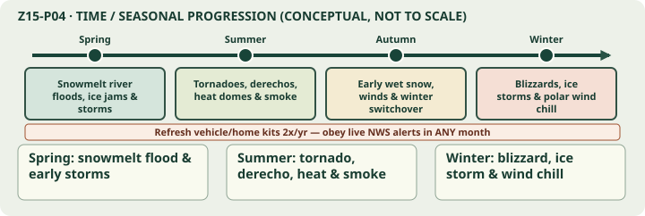

Z15-P04 · Disaster scenarios · New manuscript
Anticipate Minnesota and Upper Midwest four-season disaster patterns
Stage seasonal gear, alerts, and household drills ahead of each Upper Midwest hazard peak while staying alert for off-season extremes.
When it applies · Residents and travelers across Minnesota, Wisconsin, Iowa, the Dakotas, and northern continental climates.
Equipment · Annual four-season preparedness calendar, NOAA Weather Radio, and seasonal home/vehicle kits.

Actions
- Align seasonal staging with Upper Midwest risk windows: Spring (rapid snowmelt river flooding, ice jams, early severe storms), Summer (tornadoes, straight-line derechos, flash floods, extreme heat domes, regional wildfire smoke plumes), Autumn (early wet snow/windstorms, harvest fire/smoke), and Winter (blizzards, freezing-rain ice storms, extreme wind-chill blackouts).[D02, D06, D10]
- Refresh vehicle and household kits proactively twice a year (spring severe-storm/flood switchover and autumn winter-storm/heating switchover) rather than hunting for shovels or HEPA filters mid-crisis.[D02, U10]
- Treat seasonal calendars strictly as planning aids—unseasonal December tornadoes, November blizzards, and early-spring droughts occur, so live NWS warnings ALWAYS govern daily decisions.[D02, D01]
Failure recognition · Leaving winter blankets, snow shovel, and jumper gear out of the car trunk until late November and getting stranded in an early-season freezing sleet storm.[D02, D10]
Verify · Confirm spring and autumn seasonal kit switchovers scheduled on calendar and live NWS/MN HSEM alerts active year-round.[D02]
Stop or change course · Never dismiss an off-season NWS Warning because "it is too early/late in the year for that hazard."[D02]
Evidence and editorial notes
- D01 · FEMA / Ready.gov · Be Informed and Multi-Hazard Preparedness (current web edition)
- Section: Be Informed > Local Hazard Assessment, Alerts, and Jurisdiction Mapping · Conditions: Households preparing for regional multi-hazard emergencies
Support: Identify specific local hazards, sign up for county/municipal opt-in alerts alongside WEA/EAS and NOAA Weather Radio, know official evacuation zone labels, and review household plans twice yearly.
Limitations: Emergency warning systems, siren policies, and shelter locations vary strictly by county and municipality. · Conflicting evidence: None; aligns with T14 and T15.
Editorial note: Establishes jurisdiction-specific alert and planning baseline in Z15. · Specialist reviewer: Emergency management specialist
Primary source · checked 2026-11-24 - D02 · Minnesota HSEM · Weather Awareness and Preparedness (current web edition)
- Section: Minnesota Severe Weather and Winter Hazard Seasonal Profile · Conditions: Upper Midwest and Minnesota households across annual hazard seasons
Support: Anticipate Minnesota's distinct multi-hazard calendar: spring snowmelt flooding, spring–summer severe thunderstorms, derechos, tornadoes, and extreme heat, wildfire smoke plumes, and autumn–winter blizzards, ice storms, and wind-chill emergencies.
Limitations: Weather extremes increasingly occur outside historical peak months; rely on live NWS forecasts over calendar assumptions. · Conflicting evidence: None; grounds regional Upper Midwest applicability in Z15.
Editorial note: Connects seasonal hazard preparedness to local agency advisories. · Specialist reviewer: Regional emergency management and meteorology
Primary source · checked 2026-11-24 - D06 · US EPA / AirNow · Wildfires and Air Quality (current web edition)
- Section: Wildfires and Air Quality > AQI Categories and Exposure Reduction · Conditions: Regional or local wildfire smoke plumes impacting air quality
Support: Monitor live official AirNow AQI readings and local health advisories; move indoors with windows/doors closed during Unhealthy AQI levels, limit heavy exertion, and use properly fitted NIOSH-approved N95/P100 particulate respirators if essential outdoor exposure cannot be avoided.
Limitations: Surgical masks, bandanas, and dust masks do not seal against fine PM2.5 wildfire smoke particles; N95s do not protect against carbon monoxide or low oxygen. · Conflicting evidence: None; complements C19 and READY-WILDFIRE.
Editorial note: Grounds AQI smoke thresholds and respiratory protection limits in Z15. · Specialist reviewer: Environmental health and air-quality specialist
Primary source · checked 2026-11-24 - D10 · FEMA / Ready.gov · Winter Weather (current web edition)
- Section: Blizzards, Ice Storms, and Multi-Day Freezing Blackouts · Conditions: Blizzard Warnings, Ice Storm Warnings, and extreme wind-chill emergencies
Support: Complete supply, fuel, and medication staging before storm onset, stay off snow/ice-closed roads, prepare safe non-combustion warmth consolidation indoors, keep vents/exits clear of snowdrifts, and evacuate to community warming shelters early if indoor heat fails.
Limitations: Ice storms down overhead power lines and trees simultaneously, delaying utility restoration for days across wide areas. · Conflicting evidence: None; connects Z15 winter disaster response with Z12/Z13.
Editorial note: Grounds winter-storm travel halts and warming-center transitions. · Specialist reviewer: Cold-weather emergency management
Primary source · checked 2026-11-24 - U10 · FEMA / Ready.gov · Winter Weather (current web edition)
- Section: Winter Household Resilience > Frozen Pipes, Ice Dams, and Heating Loss · Conditions: Sub-zero Upper Midwest winter outages and prolonged cold snaps
Support: Prevent burst pipes by insulating exposed lines, keeping cabinet doors open, shutting off and draining water lines per plumbing guidance if indoor temperatures drop toward freezing, and consolidating household occupants into one safe insulated interior room.
Limitations: Draining hydronic boilers or gas water heaters requires exact manufacturer/plumber steps to prevent equipment damage or gas leaks. · Conflicting evidence: None; regionalizes winter home defense for Minnesota conditions.
Editorial note: Anchors winter pipe protection, thermal-zone consolidation, and abandonment thresholds. · Specialist reviewer: Residential plumbing, HVAC, and cold-weather emergency management
Primary source · checked 2026-11-24
Source lineage · MN HSEM Weather Awareness; new manuscript · Classification · New manuscript.